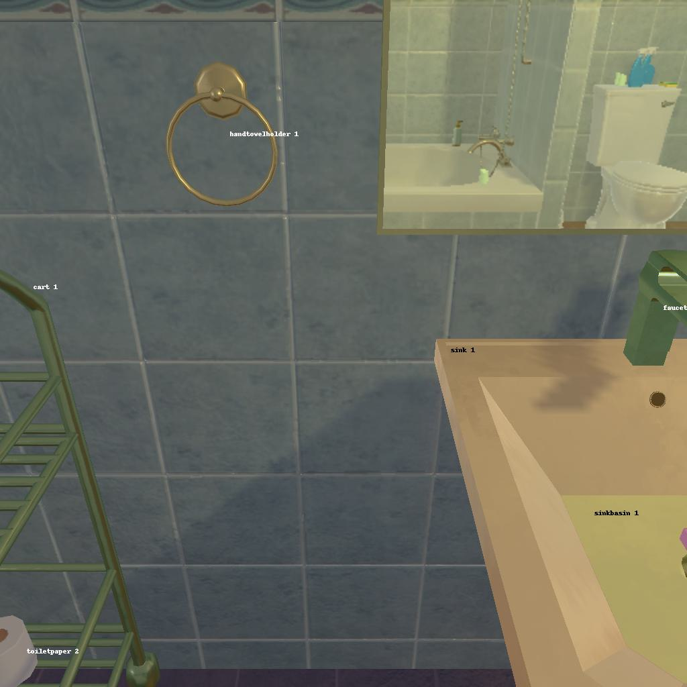

---------------------------------------------------------task: 25---------------------------------------------------------
--------------------------------------------------------------------------------------------------------------------------------------------------------------------
--------------------------------------------------------------------------------------------------------------------------------------------------------------------
Step:--------------------------------------------------------------------------18-------------------------------------------------------------------------------
----------------------------------------
VLM Prompt:
Image1:
Image2:
Image3:
**Instruction**
1. Analyze the provided image to identify all visible household objects, focusing on those relevant to the task description "find two dishsponge and put them in cart."
2. Use the analysis of the image and the task hint "The agent must find an object of the desired type, pick it up, find the correct location to place it, put it down there, then look for another object of the desired type, pick it up, return to previous location, and put it down there with the other object." to answer the question: what is the most reasonable action in the choices for the task description "find two dishsponge and put them in cart"?
4. Decide and write the answer using the template: The answer is: (i): , where i is the real number. If there is no desired object in the image, search every place based on **Initial Observation** to find the object. And if no one is exactly correct, choose a similar answer.
**Initial Observation**
You are in the middle of a room. Looking quickly around you, you can see bathtub (1), bathtubbasin (1), cart (1), toilet (1), garbagecan (1), toiletpaperhanger (1), shelf (1-4), sink (1), sinkbasin (1), handtowelholder (1)
**Answer Choices**
(1): go to bathtub 1
(2): go to bathtubbasin 1
(3): go to toilet 1
(4): go to garbagecan 1
(5): go to toiletpaperhanger 1
(6): go to shelf 1
(7): go to shelf 2
(8): go to shelf 3
(9): go to shelf 4
(10): go to handtowelholder 1
(11): take faucet 1 from sinkbasin 1
(12): take toiletpaper 2 from sinkbasin 1
(13): take soapbar 2 from sinkbasin 1
(14): examine sinkbasin 1
**Answer**
Let's think step by step by following the instructions.
----------------------------------------
----------------------------------------
Original Response:
The task is to find two dishsponges and put them in the cart. From the initial observation, we have a list of objects in the room, but none of them mention a dishsponge. Therefore, we have to search the area for the dishsponges.
Considering the provided images, we do not see any dishsponges on the visible shelves or surfaces. Since the dishsponges are not in sight, we must search every place based on the initial observation to find the object.
Looking at the answer choices, none of them directly suggest finding a dishsponge. However, some choices involve going to places where a dishsponge might be found, such as near the sink or shelves. Since shelves are common storage places for cleaning items like dishsponges, it is reasonable to start searching there.
The answer is: (6): go to shelf 1. If the dishsponge is not found on shelf 1, the agent can continue to search the other shelves (7, 8, 9) or other areas listed in the initial observation.
----------------------------------------
----------------------------------------
>>> Refine Original VLM Response and Get Pure Action: go to shelf 1
----------------------------------------
-----------------------------------------------------------------
Running time: 10.700817584991455 seconds
Total Money: 16.516690000000004
-----------------------------------------------------------------
-----------------------------------------------------------------
Text Observation:You arrive at loc 6. On the shelf 1, you see a papertowelroll 1, a toiletpaper 1, and a soapbar 1.
-----------------------------------------------------------------
UNSUCCEED